+
Projects
+
Selected Works
SOY BORICUA
Bo·ri·cua
/bôˈrēkwə/
noun informal
a Puerto Rican, especially one living in the United States.
Having grown up in what is possibly the most diverse city in the world, I have never felt like I was part of a culture. While my mother is both Puerto Rican and Russian, and my father is both Syrian and Austrian, we did not talk about where we were from or what we believed in.
Because I only have extended family in Puerto Rico, it is hard for me to connect with the other three-fourths of my background. I feel as if I am 100% Puerto Rican because it’s the only tangible part of who I am. Unfortunately, I’ll never know the majority of my identity.
Determined not to lose the woman we love, my family and I made the trek to Puerto Rico once again to reclaim our heritage and to say goodbye to my great-aunt, Blanca.
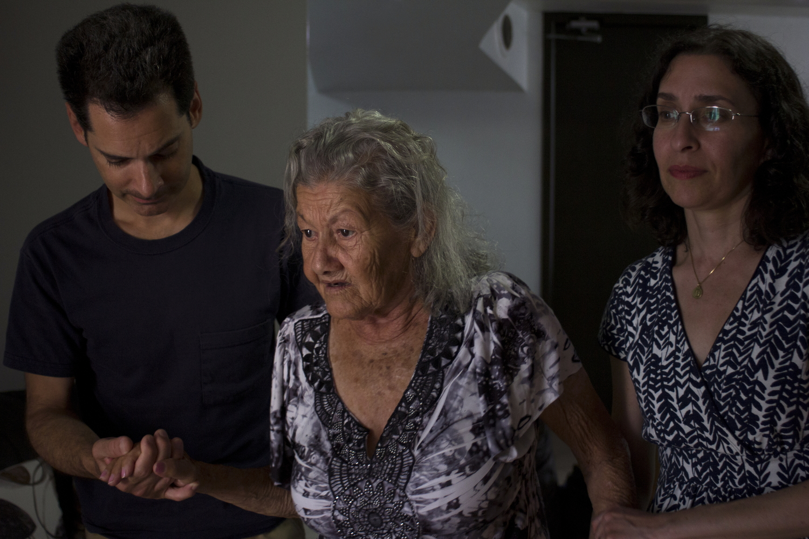
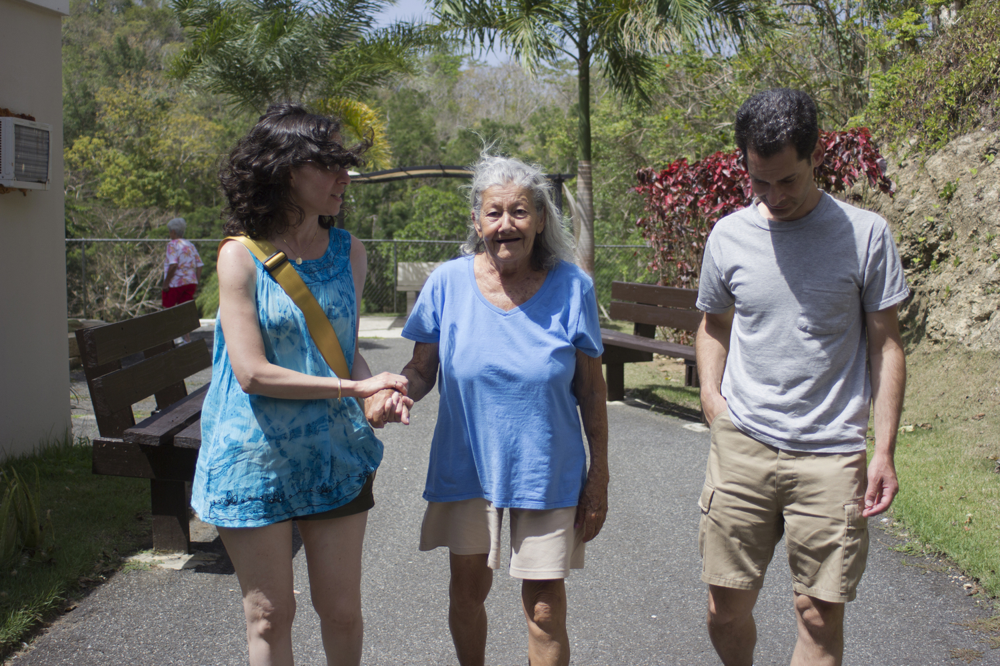
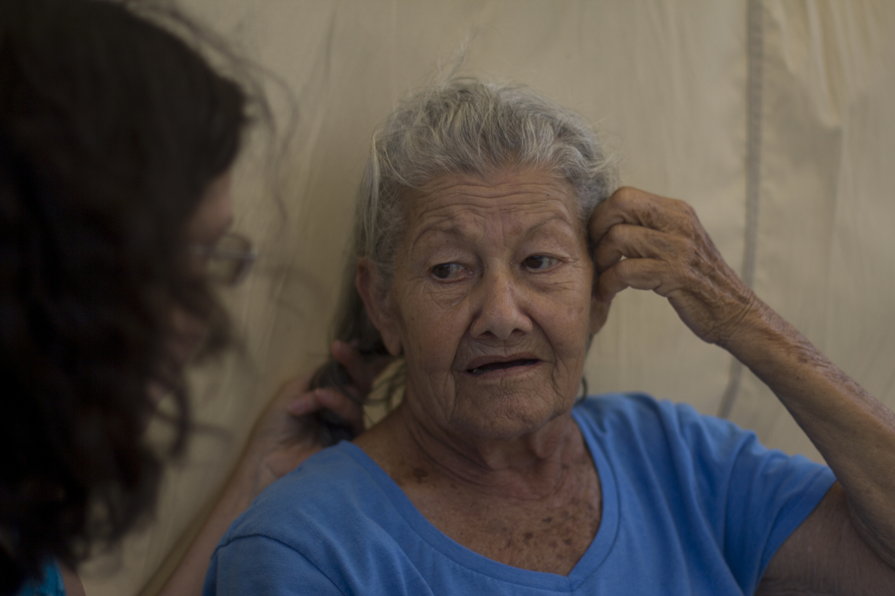
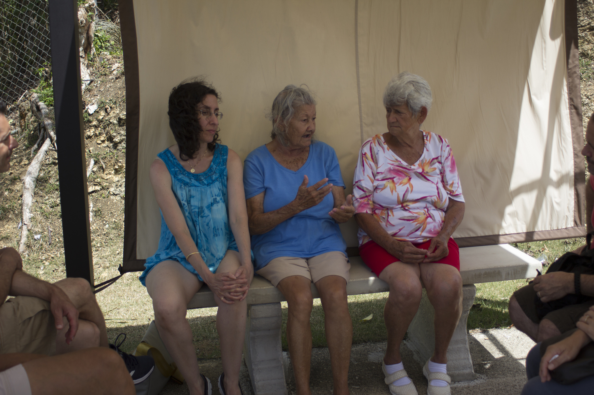
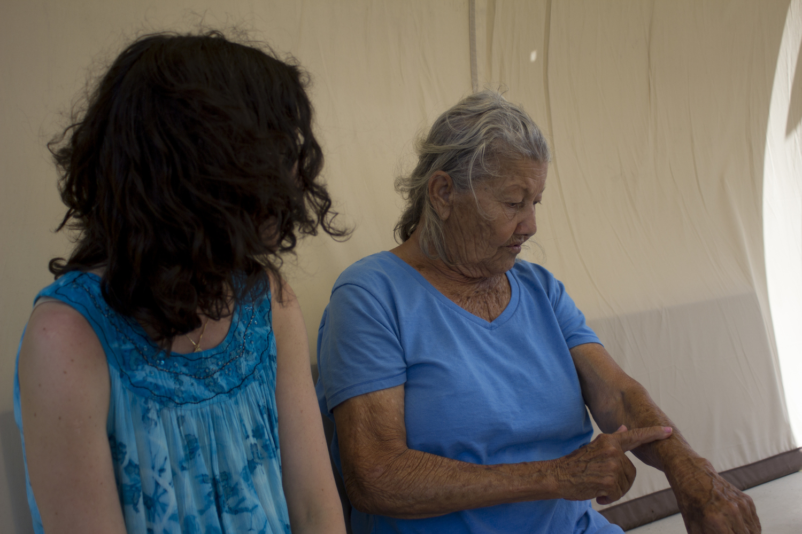
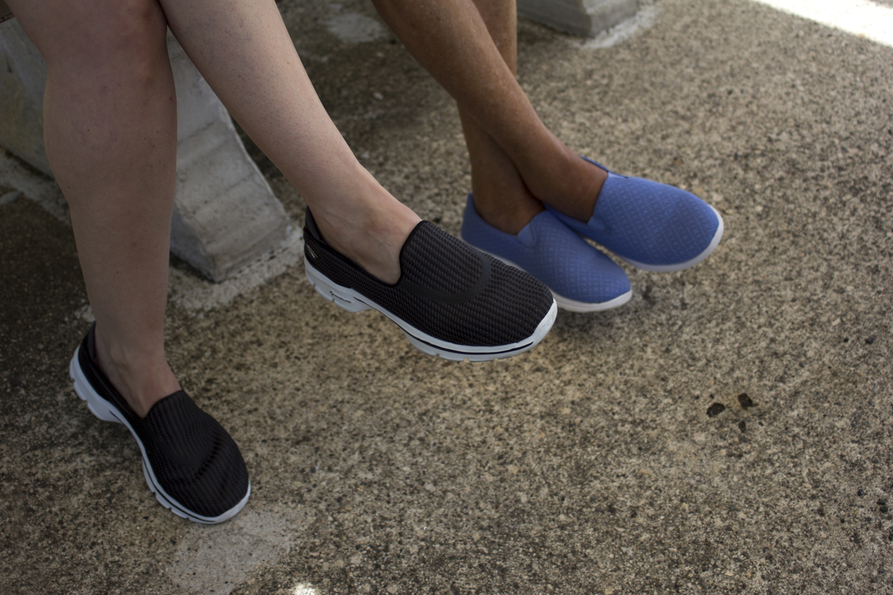
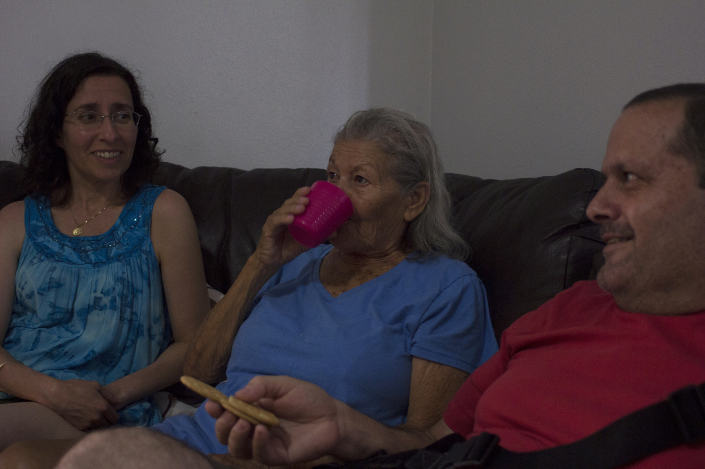
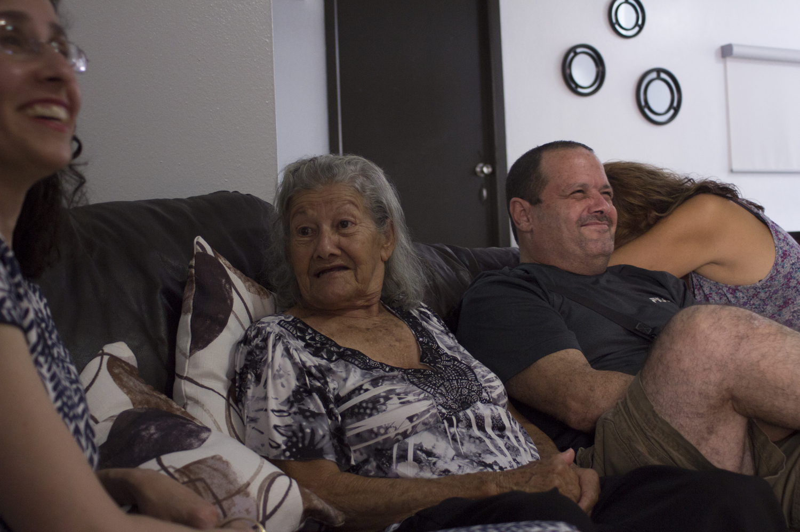
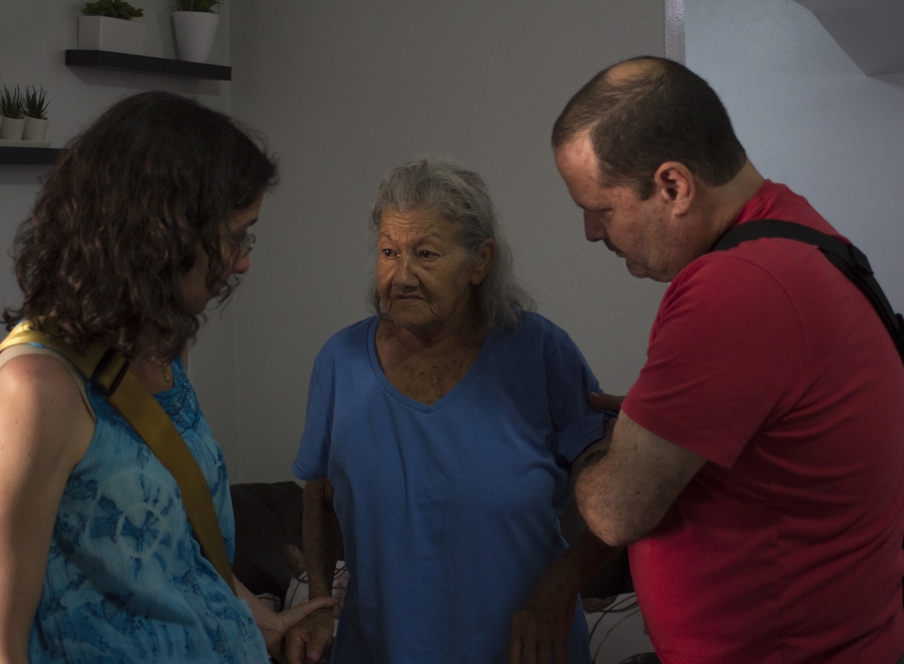
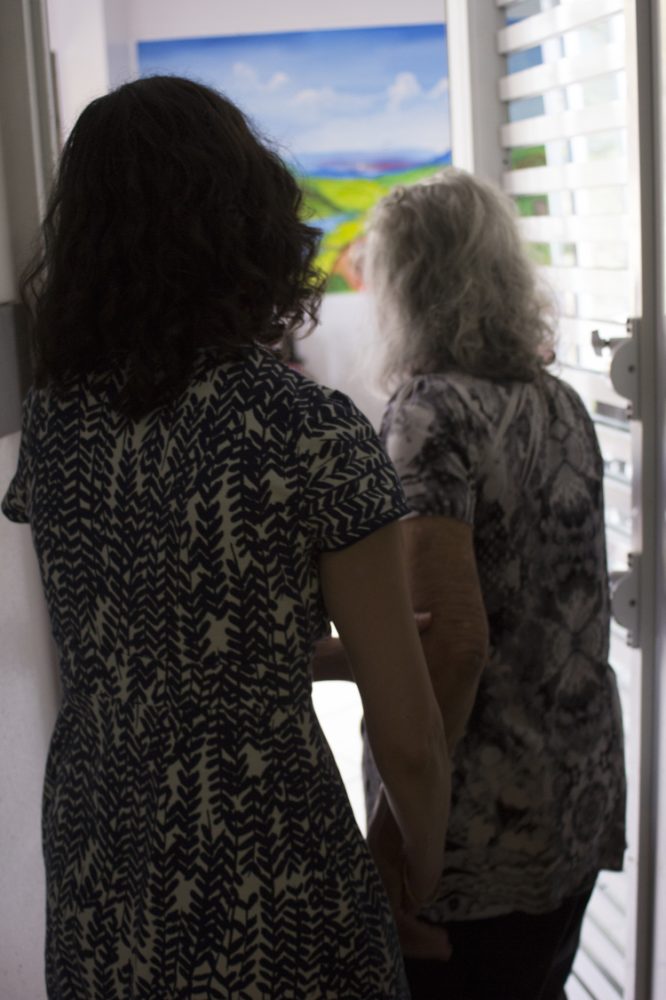
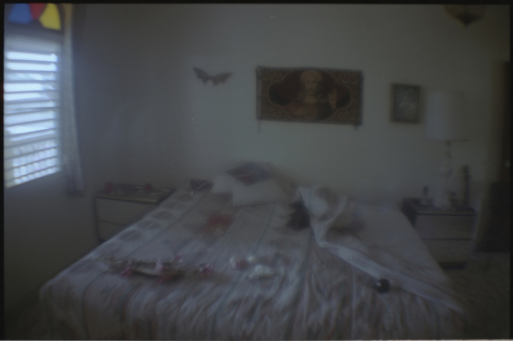
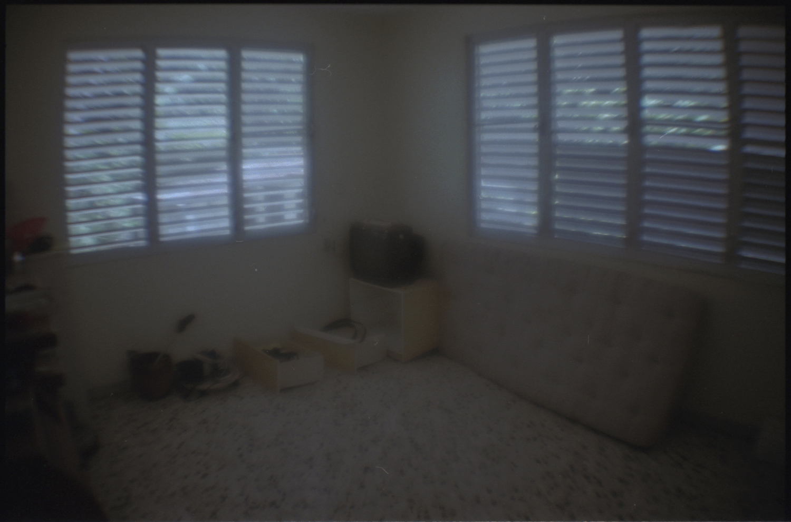
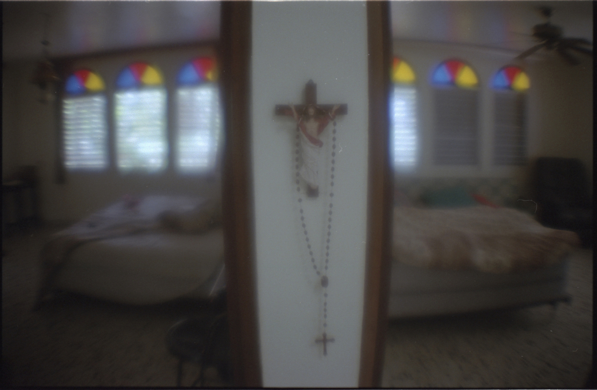